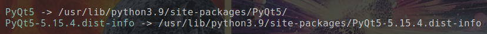
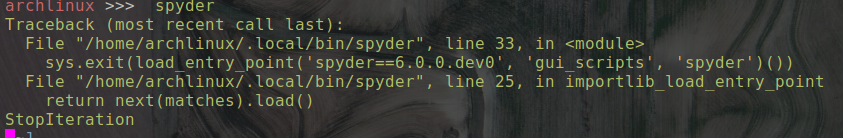

spyder 的安装以及中文输入的解决办法
spyder 的安装。
方法一
1 | |
但是 pacman 安装的 spyder 的版本为 spyder 5.0.1 ，版本较低， 并且在安装的时候需要对 python-decorator 进行降级处理。
方法二
1 | |
该方法安装 spyder 又怕将安装不必要的依赖，影响系统依赖。 可能我过度担心了
通过验证， 确实会破坏系统依赖关系。比如， 在我的系统上 pyqt5
我就没有想明白， 明明通过 pip list 能够看到系统已经有了 pyqt5, 但是在安装 spyder 时， 他为什么还要再安装 pyqt5 (并且该软件包还自带 Qt5，该 QT5 为简易版的，我需要的是系统自带的，功能齐全的 qt5)呢。
方法三
1 | |
应用虚拟环境进行安装，这样就好的多了。
中文输入的解决
因为 spyder 的 gui 依赖于 pyqt5 ， 而用 pipenv 安装 spyder 时，自己安装了一个 pyqt5, 但是该 pyqt5 包含有自己的 qt 版本， 而在这个 Qt 版本中没有对中文输入法 fcitx 进行支持， 因此在 spyder 中不能输入中文。
1 | |
最终映射效果为

启动不了
如果在启动 spyder 时， 出现了如下的问题

那是因为安装了多个版本 spyder 后， 导致部分文件没有完全的替换， 导致了不同版本的文件混用，而出现的问题。 具体是哪些文件我是不清楚。
下面是我的解决办法， 土办法，累人哈。
1 | |
最新安装方法
1 | |
spyder 的安装以及中文输入的解决办法
https://www.supermew.top/2021/08/25/spyder-的安装以及中文输入的解决办法/